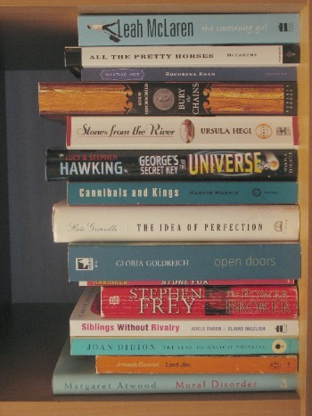
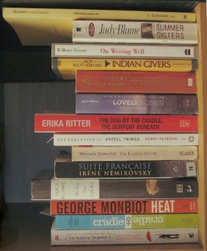

My To-Be-Read Shelf

Last year I made some kind of resolution about reading half the books on my To Be Read shelf. Our bookshelf (it's a 5 by 5 Expedit, which they apparently don't make anymore) has little squares, and right now my TBR pile is taking up two cubbies. I wanted to reduce it to one, but somehow the size of my TBR pile remains constant.
Like everyone, I imagine, I tend to avoid particular books. Various reasons: maybe a book seems hard, maybe it's one I feel I "should" read but don't actually want to, maybe I'm just never in the mood. Anyway, I find that some books lurk in the TBR shelf for months and years while some just disappear within weeks. This year I decided to steel myself and tackle the shelf alphabetically.
So here it is:
- Atwood, Margaret: Moral Disorder (my mother sent me this)
- Conrad, Joseph: Lord Jim (this is a "should" read)
- Didion, Joan: The Year of Magical Thinking
- Faber, Adele and Elaine Mazlich: Siblings Without Rivalry (a necessary re-read)
- Frey, Stephen: The Power Broker
- Gardiner, John Reynolds: Stone Fox (Delphine recommended this)
- Goldreich, Gloria: Open Doors (my mother sent this too)
- Grenville, Kate: The Idea of Perfection
- Harris, Marvin: Cannibals and Kings (I picked this up at someone's curb; it seems thinky and interesting but maybe totally dated.)
- Hawking, Stephen: George's Secret Key to the Universe (I borrowed this from a friend; I'm interested in it in theory but the cover is so tacky it's putting me off.)
- Hegi, Ursula: Stones from the River
- Hochschild, Adam: Bury the Chains (I got this as a gift from Greg Wilson. It's about the dismantlement (that is so a word) of slavery.)
- Khan, Rukhsana: Wanting Mor
- McCarthy, Cormac: All The Pretty Horses (Because I read The Road and I'm a huge masochist.)
- McLaren, Leah: The Continuity Girl (see above re: masochist)

- McLaughlin, Emma and Nicola Krause: The Nanny Diaries (A friend swears this is better than it looks.)
- McDonough, William and Michael Braungart: Cradle to Cradle (This is a book about sustainable design which I'm halfway through and can't finish. It's just so dry. I'm going to give it one more effort.)
- Monbiot, George: Heat
- Munro, Alice: The View from Castle Rock (My mother sent me this, too. She loves Alice Munro and thinks we should read this in book club.)
- Nemirovsky, Irene: Suite Francaise
- Ondaatje, Michael: The English Patient (My friend who liked The Nanny Diaries hates this book but I have another friend who loves it, so I just don't know what to think. I guess I'll have to read it and judge for myself.)
- Petroski, Henry: The Evolution of Useful Things (This is another one I've started but got bogged down with. I want to like it, though; the subject matter is interesting.)
- Ritter, Erika: The Dog By the Cradle, the Serpent Beneath (This is a book that I was interested in, so I grabbed it at a book sale or off the curb or something.)
- Sebold, Alice: The Lovely Bones
- Stross, Charles: Iron Sunrise (A while ago I said I wanted to start reading sf again, but I made a horrible misstep (in my earnest search for CanCon) and read a Robert Sawyer book. I still haven't recovered, but I hope this book will bring me back into the fold.)
- Weatherford, Jack: Indian Givers: How the Indians of the Americas Transformed the World (This is the Indian version of that book about how the Scots are responsible for everything cool ever. Maybe I will read them both and declare a winner.)
- Zinnser, William: On Writing Well
- Blume, Judy: Summer Sisters
(The last thing on that shelf is the choral score to Mendelssohn's Elijah, which we are performing this spring. I just put it there to have it handy when we start rehearsing at the end of this month.)
There are a couple of rules. You'll see that the Judy Blume book is out of order: that's my wild card. If I just can't face the next book on the list, I get to read Summer Sisters. It's my only wild card, so I have to use it wisely.
Also I can interrupt the sequence at any time for library books, book club books, or books which need to be read right away for another reason, like how-to books.
Let's see how far through the alphabet I get this year.
Comments
Comments powered by Disqus